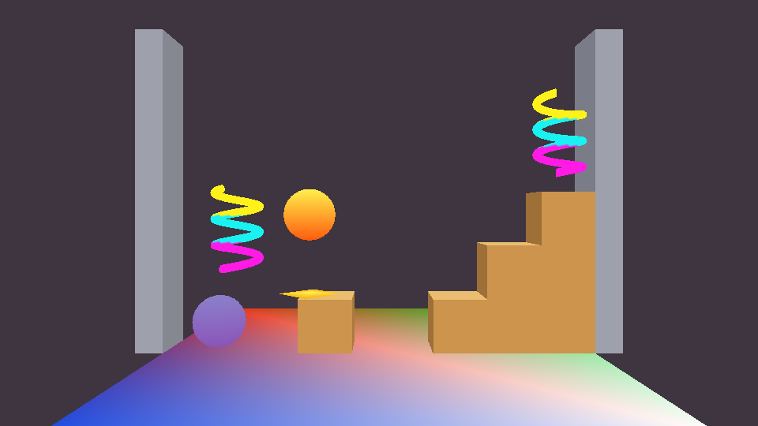
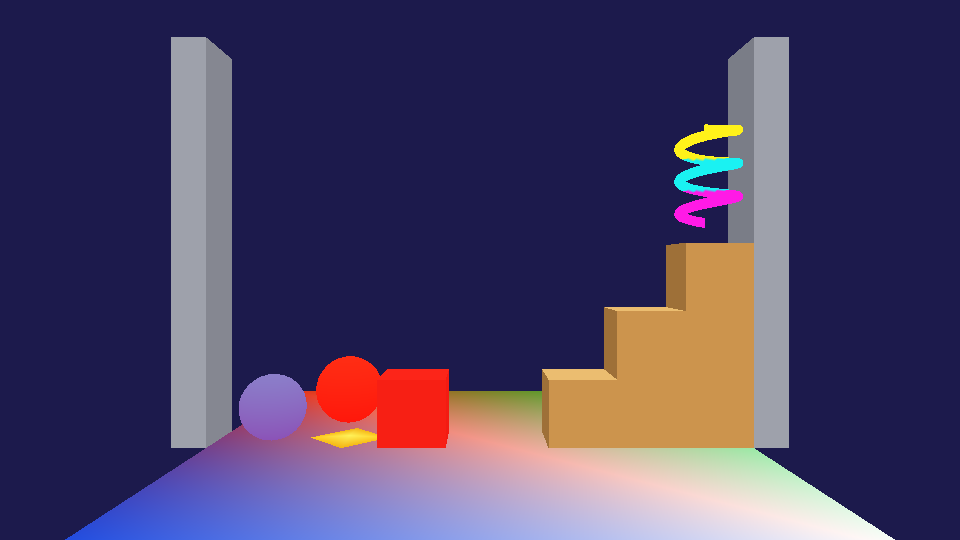
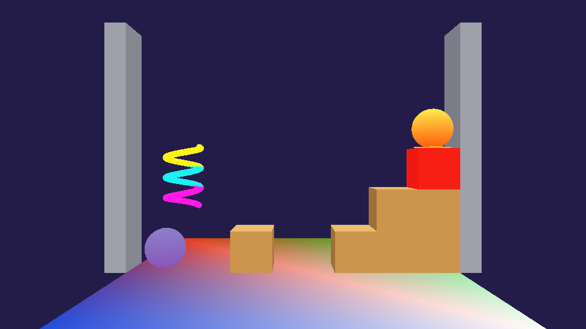
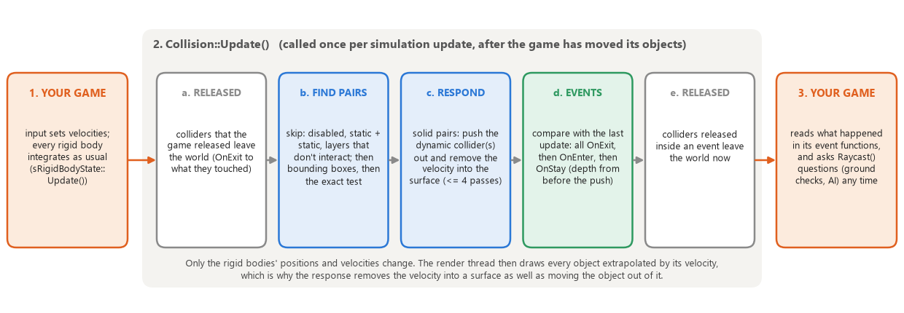
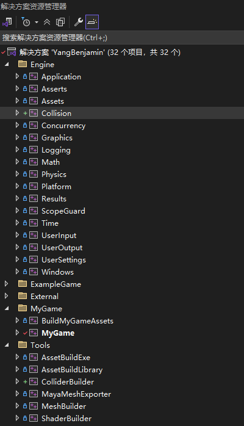
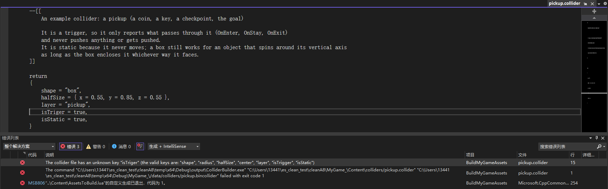
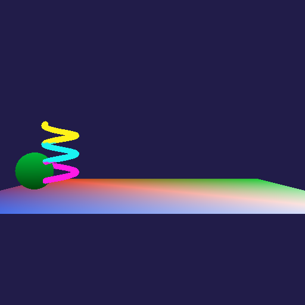
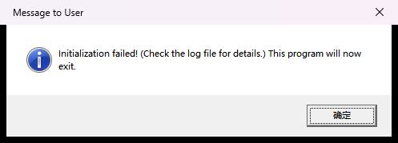

Engine System: A Collision System
Spheres and boxes described in Lua files, collision layers, walls that stop things and floors that hold them up, triggers, enter / stay / exit events and raycasts, as a static library and a builder that any of our games can add
MyGame.exe. ESC closes the game. The left and right arrow keys move the orange ball (the player), and the up arrow or SPACE jumps, but only while a raycast says that it is standing on something. W/A/S/D move the camera and Q/E turn it. Every touch that starts or ends is written to eae6320.log next to the exe.
The short version
My Engine System is a collision system for our engine. A game gives its objects colliders (spheres and axis-aligned boxes) by writing small Lua files, says in one more file which kinds of objects touch each other, and calls one function per simulation update. From then on walls stop things, floors hold them up, triggers report what passes through them, every collider is told when it starts touching, keeps touching and stops touching something, and the game can ask raycast questions like "is there ground under the player?"
It is deliberately not a physics engine: nothing rotates, and there are no masses, forces, friction or bouncing. The game keeps moving its objects exactly the way we have since Assignment 05 (velocities and accelerations in sRigidBodyState), and the collision system keeps them out of each other and tells the game what happened. I chose that scope in my proposal because almost every final project needs collisions, while very few of our games need a real physics engine, and a small system that is easy to drop into any game is more useful to my classmates than a big one that is hard to set up.
It is two projects, like the asset types that we built this semester: Engine/Collision, a platform-independent static library that the game links, and Tools/ColliderBuilder, a builder that checks the human-readable files at build time and writes tiny binary files. Everything that a classmate needs is in the code ZIP linked at the top, together with a user guide, and in the last week I tested the instructions by following them myself in a clean copy of my Assignment 08 solution.
| Feature | What it means for a game |
|---|---|
| Colliders | A sphere (radius) or an axis-aligned box (half size), with an optional offset, attached to a game object's rigid body. One file per kind of collider; any number of objects can load the same file. |
| Layers | One file per game names its layers ("world", "player", "enemy", "pickup", ...) and the pairs that touch. Anything else passes through without events, and without even being tested. |
| Solid response | A moving collider is pushed out of what it ran into, and the part of its velocity that points into the surface is removed, so objects stand on floors, stop at walls and slide along them. |
| Triggers | Colliders that report overlaps but never push anything: pickups, checkpoints, the goal, damage zones. |
| Events | OnEnter, OnStay and OnExit on every collider (a lambda is easiest), with the other collider, the contact normal and how deep they overlapped. |
| Raycasts | The closest hit (collider, point, normal, distance) along a ray, filtered by a layer mask: ground checks, line of sight, AI that looks ahead. |
| Build-time checks | A mistake in a data file (a misspelled key, a layer that doesn't exist, a negative radius) fails the build with the file and the line in Visual Studio's Error List. |

1. What my project does
The demo is MyGame turned into a small platformer that is built on every part of the system. Download it at the top of this page (the controls are next to the link). These screenshots are from the Direct3D build unless they say otherwise.







This is the beginning of the log from the run in the knockback screenshot, from the collision system's first line on. The system writes the layers when it starts (the first thing to look at when something doesn't collide); the rest comes from MyGame's event functions and raycasts:
Collision: initialized with 4 layers from "data/Collision/game.binlayers"
Collision: layer 0 "world" touches: player, enemy
Collision: layer 1 "player" touches: world, enemy, pickup
Collision: layer 2 "enemy" touches: world, player
Collision: layer 3 "pickup" touches: player
The application was successfully initialized
MyGame: the patroller's raycast hit the fence crate 0.60 units ahead, so it turned around
Collision: the player started touching the floor (normal +0.00 +1.00 +0.00, depth 0.100 before it was pushed out)
MyGame: the patroller's raycast hit the left wall 0.60 units ahead, so it turned around
Collision: the player stopped touching the floor (OnStay was called 79 times in between)
Collision: the player started touching the fence crate (normal +1.00 +0.02 +0.00, depth 0.000 before it was pushed out)
Collision: the player stopped touching the fence crate (OnStay was called 2 times in between)
MyGame: the patroller's raycast hit the fence crate 0.60 units ahead, so it turned around
Collision: the player started touching pickup 1 (above the pen) (normal +1.00 +0.00 +0.00, depth 0.047 before it was pushed out)
MyGame: the player collected pickup 1 (above the pen) (1 collected so far)
Collision: the player stopped touching pickup 1 (above the pen) (OnStay was called 0 times in between)
Collision: the player started touching the patroller (normal +0.77 +0.64 +0.00, depth 0.054 before it was pushed out)
MyGame: the patroller knocked the player back and turned around
MyGame: the patroller's raycast hit the left wall 0.60 units ahead, so it turned around
Collision: the player stopped touching the patroller (OnStay was called 0 times in between)
Collision: the player started touching the patroller (normal +0.46 +0.89 +0.00, depth 0.016 before it was pushed out)
MyGame: the player landed on the patroller and bounced off
Collision: the player stopped touching the patroller (OnStay was called 0 times in between)The depths are "before it was pushed out": falling onto the floor at about 7 units per second sinks about 0.1 units into it in one update (MyGame simulates 60 times a second), and the push takes all of it out again, so the player is never drawn inside the floor. The touch with the fence crate's side has a depth of 0 because the player walks exactly 0.05 units per update and happened to stop right at the face. The patroller sees the wall and the crate at 0.60 units: its radius plus the 0.1 units that it looks ahead. And the two touches with the patroller show the threshold in the player's OnEnter: (0.77, 0.64) doesn't point up enough (0.7 is the threshold), so it counted as a hit from the side; (0.46, 0.89) was a landing on its head.
This is roughly all the game-side code behind the demo's collision behavior. The names and numbers are MyGame's, but the patterns (a look-ahead ray, a ground check, a trigger that switches itself off, reacting to the contact normal) work in any game:
// cMyGame::UpdateSimulationBasedOnTime() (shortened)
// 1. The patroller looks ahead, only at the "world" layer, and turns around before it bumps into anything
Collision::sRaycastHit hit;
if ( Collision::Raycast( patroller.position, Math::sVector( m_patrollerDirection, 0.0f, 0.0f ),
s_patrollerRadius + 0.1f, hit, m_layerMask_world ) )
{
m_patrollerDirection = -m_patrollerDirection;
}
patroller.velocity = Math::sVector( m_patrollerDirection * s_patrollerSpeed, 0.0f, 0.0f );
// 2. Everything moves as usual (the player's acceleration is gravity); then the collision system
// pushes the player out of whatever it moved into and sends the events
m_object_player.Update( i_elapsedSecondCount_sinceLastUpdate );
m_object_patroller.Update( i_elapsedSecondCount_sinceLastUpdate );
Collision::Update();
// 3. The ground check: one ray straight down finds the world under the player
if ( Collision::Raycast( player.position, Math::sVector( 0.0f, -1.0f, 0.0f ), 50.0f, hit, m_layerMask_world ) )
{
m_isPlayerOnGround = hit.distance <= ( s_playerRadius + 0.05f );
m_object_marker.rigidBodyState.position = hit.point + Math::sVector( 0.0f, 0.03f, 0.0f );
}
// A pickup's OnEnter (pickups are triggers in "pickup", and only "player" interacts with that layer)
pickup.collider->OnEnter = [this, &pickup, i_pickupIndex]( const Collision::sContact& )
{
pickup.isVisible = false;
pickup.collider->SetEnabled( false ); // nothing can touch it until it comes back
m_secondCount_untilPickupRespawns[i_pickupIndex] = s_pickupRespawnDelay;
};
// The player's OnEnter, when the other collider is the patroller
// (the contact's normal points from the patroller toward the player)
if ( i_contact.normal.y >= 0.7f )
{
velocity.y = s_bounceSpeed; // it landed on the patroller's head
}
else if ( m_secondCount_hurtLeft <= 0.0f )
{
// hit from the side: knocked back, away from the patroller, which turns around
const auto awayFromThePatroller = ( i_contact.normal.x >= 0.0f ) ? 1.0f : -1.0f;
velocity = Math::sVector( awayFromThePatroller * s_knockbackSpeed_sideways, s_knockbackSpeed_up, 0.0f );
m_patrollerDirection = -awayFromThePatroller;
m_secondCount_hurtLeft = s_hurtDuration; // drawn red for half a second
}What happens inside one update

- Released colliders leave first. A collider that the game released since the last update is removed before anything reads its rigid body (which might not exist any more), and whatever it was touching gets OnExit.
- Find the pairs that touch. Each collider's world-space shape is calculated once. A pair is skipped without any math if either collider is disabled, if both are static (they can never start or stop touching), or if the layers file doesn't pair their layers, which is one AND of the first layer's mask with the second layer's bit. The bounding boxes reject almost every remaining pair cheaply, and only the pairs that are left get the exact test: sphere-sphere (distance between the centers), sphere-box (the box's closest point to the sphere's center), or box-box (the axis where they overlap the least). Each gives a unit normal and a penetration depth.
- Respond. For every pair where neither collider is a trigger, the dynamic collider is moved out along the normal and the velocity into the surface is removed (two dynamic ones share the push). A collider in a corner touches two things at once, so this is done again, up to four passes, each time from where the colliders are after the last pass.
- Send the events. The colliders are kept in the order they were added, so the list of touching pairs comes out sorted, and so does last update's list. One walk through both lists side by side finds the pairs that are only in the old list (exit), only in the new one (enter) or in both (stay), without searching. All the exits are sent, then the enters, then the stays, to both colliders of each pair, each from its own point of view (opposite normals).
- Colliders released inside an event leave now, so that whatever they were touching gets its OnExit in the same update.

// cWorld.cpp, ResolveOverlaps() (shortened): for every touching pair where neither collider is a trigger
if ( pair.b->IsStatic() )
{
// only a moves: all of the way out, and it can't keep moving into b
rigidBody_a.position += normal * penetrationDepth;
RemoveVelocityIntoSurface( rigidBody_a.velocity, normal );
}
else if ( pair.a->IsStatic() ) { /* the same for b, with the opposite normal */ }
else
{
// both are dynamic: each moves half of the way, and their approaching speed is taken from both equally
const auto halfOfTheCorrection = normal * ( penetrationDepth * 0.5f );
rigidBody_a.position += halfOfTheCorrection;
rigidBody_b.position -= halfOfTheCorrection;
const auto approachingSpeed = Math::Dot( rigidBody_a.velocity - rigidBody_b.velocity, normal );
if ( approachingSpeed < 0.0f )
{
rigidBody_a.velocity -= normal * ( approachingSpeed * 0.5f );
rigidBody_b.velocity += normal * ( approachingSpeed * 0.5f );
}
}
// RemoveVelocityIntoSurface(): moving away from the surface or along it is left alone
const auto speedAlongNormal = Math::Dot( io_velocity, i_normal );
if ( speedAlongNormal < 0.0f )
io_velocity -= i_normal * speedAlongNormal;Raycasts test every enabled collider in the mask and keep the closest hit, and each test only looks as far as the closest hit so far. A sphere is a quadratic in the distance along the ray (with a unit direction its first coefficient is 1), and the smaller root is where the ray enters. A box uses the slab method from the figure: the ray is inside the box after the last of its three entries and before the first of its three exits, and the axis of the last entry gives the face and the normal. A ray that starts inside a collider doesn't hit that collider, which is what lets a ray from an object's center ignore the object's own collider. Raycast() changes nothing, so it can be called at any time, even from inside an event.
2. What a classmate has to do to use it
Download the code ZIP at the top of this page. It doesn't replace any file that you already have, and it only uses engine code that we all got in Assignment 01 (Asserts, Logging, Math, Physics, Platform, Results, ScopeGuard, Windows, Lua and the AssetBuildLibrary). I checked my repository's history to make sure: none of those projects have changed since Assignment 01, so they should be the same as yours. Nothing in Graphics, in your meshes or in your effects has to change. The full documentation is the user guide (linked at the top, and in the ZIP as Engine/Collision/UserGuide.md); this section is the short version.
What is in the ZIP
| Folder or file | What it is |
|---|---|
| README.md | Start here: the setup steps and the minimum code. |
| Engine/Collision/ | The run-time static library. Collision.h is the only header that a game includes. The user guide is in here too, so it shows up in Visual Studio next to the headers. |
| Tools/ColliderBuilder/ | The builder for .layers and .collider files. It is built like MeshBuilder and ends up next to it. |
| AssetBuildFunctions_Collision.lua | The two asset types ("collisionlayers" and "colliders") to paste into your AssetBuildFunctions.lua. |
| ExampleContent/ | An example layers file, six example collider files (player, enemy, floor, wall, crate, pickup) and the lines for AssetsToBuild.lua. |
Setting it up (once, about ten minutes)
- 1. Copy
Engine\Collisioninto your solution's Engine folder andTools\ColliderBuilderinto its Tools folder. - 2. In Solution Explorer, right-click the Engine folder > Add > Existing Project... > Collision.vcxproj, and the Tools folder > Add > Existing Project... > ColliderBuilder.vcxproj.
- 3. Right-click your game project > Add > Reference... > tick Collision.
- 4. Right-click BuildMyGameAssets > Build Dependencies > Project Dependencies... > tick ColliderBuilder (the same way it depends on MeshBuilder).
- 5. Paste the asset types from
AssetBuildFunctions_Collision.lua(everything below its dashed line) into yourAssetBuildFunctions.lua, right after your mesh asset type. - 6. Copy the example data into
MyGame_\Content(or write your own) and add the two tables fromExampleContent\AssetsToBuild_Collision.luato your AssetsToBuild.lua. - 7. Build the solution:
data\Collision\game.binlayersand a.bincolliderper collider file appear with your other built assets. - 8. Add the code below to your game. When it runs, the first lines that the system writes to
eae6320.loglist your layers and what each of them touches.

The data files
The layers file is the one place where a game decides what interacts with what. In my demo enemies don't collect pickups simply because "enemy" and "pickup" aren't paired, with no code at all:
-- MyGame_/Content/Collision/game.layers (one per game)
return
{
layers =
{
"world", -- the floor, the walls and the crates (all static)
"player", -- the ball that the arrow keys move
"enemy", -- the ball that patrols back and forth on its own
"pickup", -- the spinning coils (triggers)
},
-- The pairs of layers that touch each other;
-- colliders in layers that aren't paired here pass through each other without any events
interactions =
{
{ "player", "world" },
{ "player", "enemy" },
{ "player", "pickup" },
{ "enemy", "world" },
-- (enemies don't collect pickups, so "enemy" and "pickup" aren't paired)
},
}A collider file describes one kind of collider. Only the shape, its size and the layer are required:
-- Colliders/player.collider: only shape, its size and layer are required
return
{
shape = "sphere",
radius = 0.5,
layer = "player",
}
-- Colliders/floor.collider: a static box whose top is at the floor mesh's plane
return
{
shape = "box",
halfSize = { x = 4.0, y = 0.5, z = 4.0 }, -- (half of the size along each axis)
center = { y = -0.5 }, -- (an offset from the object's position; missing components are 0)
layer = "world",
isStatic = true, -- never moves, never pushed
}
-- Colliders/pickup.collider: a trigger reports overlaps but never pushes anything
return
{
shape = "box",
halfSize = { x = 0.55, y = 0.85, z = 0.55 },
layer = "pickup",
isTrigger = true,
isStatic = true,
}ColliderBuilder checks everything and reports every problem with OutputErrorMessageWithFileInfo(), so a mistake fails the asset build and shows up in the Error List with the file and the line, and double-clicking it opens the file at that line. Misspelled keys are errors rather than being ignored, because isTriger = true would otherwise silently make a solid collider. A value that belongs to the other shape (a sphere with a halfSize) is an error too, since it almost always means that the shape was changed and the size wasn't.

The code
Three calls are all that a game needs: initialize and load in Initialize(), one Update() per simulation update, and clean up in CleanUp():
#include <Engine/Collision/Collision.h>
// Initialize(): the system first (it loads the layers), then a collider for every object that needs one.
// A collider is attached to a rigid body and follows it from then on.
if ( !( result = Collision::Initialize( "data/Collision/game.binlayers" ) ) )
return result;
if ( !( result = Collision::cCollider::Load( "data/Colliders/player.bincollider", m_player.rigidBodyState, m_player.collider ) ) )
return result;
m_player.collider->userData = &m_player; // so that an event or a raycast can find the object
m_player.collider->OnEnter = [this]( const Collision::sContact& i_contact )
{
// i_contact.other is the other collider, i_contact.normal points from it toward the player,
// and i_contact.penetrationDepth is how far they had sunk into each other
};
// UpdateSimulationBasedOnTime(): move everything the way we always have, then let the collision system look
m_player.rigidBodyState.Update( i_elapsedSecondCount_sinceLastUpdate );
m_enemy.rigidBodyState.Update( i_elapsedSecondCount_sinceLastUpdate );
Collision::Update(); // pushes solid objects apart, then sends OnExit / OnEnter / OnStay
// CleanUp(): colliders are reference counted like meshes and effects
m_player.collider->DecrementReferenceCount();
m_player.collider = nullptr;
Collision::CleanUp();The one rule to remember: a collider keeps a pointer to the rigid body that it was loaded with, so that rigid body must not move in memory while the collider exists. A member of your game class, a fixed-size array or a heap-allocated object is fine; an element of a growing std::vector of objects is not. To remove a collider at any time (a collected coin, a dead enemy) call DecrementReferenceCount(): the system removes it safely at its next update, sends OnExit to whatever it was touching, and never reads that rigid body again. To switch one off for a while, call SetEnabled( false ).
The guide has short recipes for the things that games usually need: pickups, finding your own object in an event through userData, gravity and jumping with a ground check, enemies that turn around at walls and ledges, landing on an enemy versus being hit by it, moving platforms and doors (static colliders that the game moves), removing objects, and many objects that share one collider file. It also has every key of both file formats, how the response works, the limits and how to stay inside them, and two troubleshooting tables with the actual messages that you would see.
I followed my own instructions in a clean solution
Writing instructions is easy; writing instructions that work for somebody else is not, because I know things about my own solution that I don't notice anymore. So in the final week I took my assignment08 tag (a solution that had never had the collision system in it), copied in the contents of the ZIP and did the setup steps exactly as the README says. Then I wrote the code into its cMyGame using only the guide's snippets: a sphere collider on the ball, a box under the floor, a trigger around the spinning coil, and the guide's ground-check raycast.
// What I added to the clean Assignment 08 game, using only the guide's snippets (shortened):
// Initialize()
Collision::Initialize( "data/Collision/game.binlayers" );
Collision::cCollider::Load( "data/Colliders/player.bincollider", m_object_player.rigidBodyState, m_collider_player );
Collision::cCollider::Load( "data/Colliders/floor.bincollider", m_object_floor.rigidBodyState, m_collider_floor );
Collision::cCollider::Load( "data/Colliders/pickup.bincollider", m_object_spinner.rigidBodyState, m_collider_spinner );
m_collider_player->OnEnter = [this]( const Collision::sContact& i_contact ) { /* log it; disable the spinner's trigger */ };
// UpdateSimulationBasedOnTime(): after the objects move
Collision::Update();
const bool isOnGround = Collision::Raycast( m_object_player.rigidBodyState.position, Math::sVector( 0.0f, -1.0f, 0.0f ),
playerRadius + 0.05f, hit, Collision::GetLayerMask( "world" ) );
// CleanUp(): release the three colliders, then
Collision::CleanUp();It built in all four configurations on the first try with no errors (and with no warnings once the copy was in a normal folder; see section 4), and it ran. Holding the down arrow tried to drive the ball into the floor, and it stayed on top of it (the A8 game has no gravity, so the arrow keys move the ball in x and y), and walking left through the coil's trigger box sent OnEnter, which disabled the trigger, which sent OnExit in the next update, exactly in the order the guide describes:
MyGame initialized
Collision: initialized with 4 layers from "data/Collision/game.binlayers"
Collision: layer 0 "world" touches: player, enemy
Collision: layer 1 "player" touches: world, enemy, pickup
Collision: layer 2 "enemy" touches: world, player
Collision: layer 3 "pickup" touches: player
The application was successfully initialized
Setup test: OnEnter, the player started touching the floor (layer "world", normal 0.00 1.00 0.00, depth 0.000)
Setup test: the player is on the ground (the ray hit the floor 0.500 units below its center, normal 0.00 1.00 0.00)
Setup test: OnEnter, the player started touching the spinner (a trigger) (layer "pickup", normal 1.00 0.00 0.00, depth 0.017)
Setup test: OnExit, the player stopped touching the spinner (a trigger)
MyGame cleaned up
Then I made the mistakes that I expect people to make, to find out what they would see, and put the real messages in the guide's troubleshooting table:
| Mistake | What you see |
|---|---|
| The Lua block pasted at the top of AssetBuildFunctions.lua | AssetBuildFunctions.lua(15): error : attempt to call a nil value (global 'NewAssetTypeInfo') |
| The Lua block forgotten | AssetsToBuild.lua : error : No asset type info has been defined for "colliders" (and the same for "collisionlayers") |
| A misspelled key in a collider file | pickup.collider(15): error : The collider file has an unknown key "isTriger" (the valid keys are: ...) |
| A misspelled layer | player.collider(16): error : The layer "plaeyr" isn't in the game's layers file (Collision/game.layers); the layers are: "world", "player", "enemy", "pickup" |
| The layers file changed | All six colliders and the layers file are built again, and nothing else is (no meshes or shaders). |
| Nothing changed | Nothing is built. |
Two things came out of the test. The guide now says exactly where the Lua block goes and why: the first version said "at the end of the file", which does work (I tried it), but pasting it at the top doesn't, and the error message doesn't mention collisions at all, so it is now in the troubleshooting table. And I learned something about MSBuild (see section 4).
I'm responsible for supporting anyone who uses the system, so the README and the guide both say to contact me on Slack or by email, and I'm happy to help get it into your game.
3. How it uses what we learned this semester
Almost every decision in the project came from something that we did for graphics this semester. The collision system is, in a way, a second asset type and a second engine library built the same way as the first ones.
Its own static library with a platform-independent interface
Like Graphics, the collision system is its own static library in the engine (namespace eae6320::Collision) that the game references, and its builder is its own tool project, exactly like MeshBuilder. Both projects import EngineDefaults.props, so they build for x64/Direct3D and x86/OpenGL in Debug and Release like everything else, and the output lands where the asset build expects it. The interface is platform-independent: the public headers only use the engine's math, physics and results types, its reference-counting macros, and standard C++. In Assignments 01-03 we kept platform-specific code in .win.cpp / .d3d.cpp / .gl.cpp files behind one interface; collision math has nothing platform-specific in it, so I didn't need any such file. The only place where the system touches the operating system is loading files, and that goes through the engine's Platform library (Platform::LoadBinaryFile()). A game includes exactly one header, Collision.h, and the bookkeeping lives in an internal class (Internal::cWorld) that the collider makes a friend so that none of it has to be public.
Human-readable source files, a builder, and binary files
This is the pattern of Assignments 06 and 08: humans edit Lua tables, a builder checks them at build time, and the game only loads small binary files that need no parsing. Errors are found at build time, when they are cheap, instead of when the game runs: ColliderBuilder reports every problem with the file and the line, the same way that we made MeshBuilder report errors in Assignment 08. The system is part of the asset build: two new asset types in AssetBuildFunctions.lua, listed in AssetsToBuild.lua, with GetBuilderRelativePath() pointing at ColliderBuilder.exe.
There is one dependency between files that meshes don't have. A collider names its layer, and the builder turns the name into the layer's index so that the game never compares strings, which means that every built collider depends on the layers file. That is handled the way the shaders handle shaders.inc: the colliders' ShouldTargetBeBuilt() rebuilds them whenever the layers file is newer, and RegisterReferencedAssets() (the asset build system's hook for assets that use other assets) makes sure the layers file is built whenever any collider is.
The binary formats follow what we learned about loading binary data in Assignment 08: as little work as possible at run time, no loops, and the data used in place. A built collider is exactly one 32-byte struct, written with one write and loaded with one size check and one copy; a static_assert checks the size and that it can be copied as raw bytes, and the padding at the end is an explicit byte (the class-size measurements from Assignments 02-05 made me look at padding on purpose). The layers file is four pieces: the count, one interaction mask per layer, where each name starts, and the names, so the system keeps the loaded file in memory and points into it instead of copying anything.
// ColliderFormats.h: a built collider file (*.bincollider) is exactly one of these
struct sCollider
{
Math::sVector center; // the offset from the rigid body's position
Math::sVector halfSize; // (for a sphere every component is the radius, so center +/- halfSize bounds either shape)
float radius = 0.0f; // (0 for a box)
eShape shape = eShape::Sphere; // uint8_t
uint8_t layer = 0; // the index of its layer: the name was looked up at build time
uint8_t flags = 0; // IsTrigger | IsStatic
uint8_t unused = 0; // (makes the padding at the end explicit)
};
static_assert( sizeof( sCollider ) == 32, "A built collider file is expected to be exactly 32 bytes" );
static_assert( std::is_trivially_copyable_v<sCollider>, "A collider has to be copyable as raw bytes" );
// cCollider::Load(): the file is one struct, so loading it is one read, one size check and one copy
Platform::LoadBinaryFile( i_path, dataFromFile, &errorMessage );
if ( dataFromFile.size != sizeof( ColliderFormats::sCollider ) ) { /* report it and fail */ }
std::memcpy( &colliderData, dataFromFile.data, sizeof( colliderData ) );
// (then it is checked: a built file could be damaged, or out of date if the layers changed)player.bincollider (32 bytes)
00 00 00 00 00 00 00 00 00 00 00 00 center (0, 0, 0)
00 00 00 3F 00 00 00 3F 00 00 00 3F halfSize (0.5, 0.5, 0.5) (the sphere's bounding box)
00 00 00 3F radius 0.5
00 01 00 00 shape 0 = sphere, layer 1 = "player", flags 0, unused
pickup.bincollider (32 bytes)
00 00 00 00 00 00 00 00 00 00 00 00 center (0, 0, 0)
CD CC 0C 3F 9A 99 59 3F CD CC 0C 3F halfSize (0.55, 0.85, 0.55)
00 00 00 00 radius 0 (boxes don't use it)
01 03 03 00 shape 1 = box, layer 3 = "pickup", flags 3 = trigger + static, unused
game.binlayers (62 bytes: four pieces)
04 00 00 00 4 layers
06 00 00 00 0D 00 00 00 03 00 00 00 one interaction mask per layer: world = 0110 (player, enemy),
02 00 00 00 player = 1101, enemy = 0011, pickup = 0010
00 00 00 00 06 00 00 00 0D 00 00 00 where each name starts: 0, 6, 13, 19
13 00 00 00
77 6F 72 6C 64 00 70 6C 61 79 65 72 "world\0player\0enemy\0pickup\0"
00 65 6E 65 6D 79 00 70 69 63 6B 75
70 00For a sphere the half size is filled in with the radius at build time, so center ± halfSize is the bounding box of either shape and the quick test before the exact one doesn't need to know which shape it has. Unlike meshes (where the Direct3D and OpenGL files differ in their winding order), the collision files are identical on both platforms: they only contain floats and small integers, and both of our platforms are little-endian. If a platform ever needed something different, the builder is where it would change. Built files are still checked when they are loaded (a file could be damaged, or built with an older layers file), and a bad one makes Load() return a failure with a message in the log instead of crashing.
Reference counting, factory functions and lifetime
Colliders are reference counted with the same macros as cMesh and cEffect, and created by a Load() factory function that returns a cResult, exactly as in Assignment 04. The part that needed the most thought was lifetime. In Assignment 04 the render thread holds references to the meshes and effects of the frame that it is drawing, so that the game can release them at any time. I used the same idea: while a collider is in the world, the world holds a reference of its own. When the game releases a collider, even from inside an event while the system is walking its list of contacts, the collider doesn't disappear under the system's feet. The system notices that it is the only owner left, removes the collider at a safe point, sends OnExit to whatever it was touching, and gives up its reference, which deletes it.
// cWorld.cpp: while a collider is in the world, the world holds a reference of its own,
// so "is the game still using it?" is a question about the reference count
bool cWorld::IsHeldByGame( const cCollider& i_collider )
{
return i_collider.m_referenceCount > 1; // one of the references is the world's
}
// SendEvent(): a collider that the game has released gets no more events,
// and the function is copied before it is called so that it may replace itself (OnEnter = nullptr) safely
if ( !cWorld::IsHeldByGame( io_collider ) )
return;
const auto function = ( i_event == eEvent::Enter ) ? io_collider.OnEnter
: ( ( i_event == eEvent::Stay ) ? io_collider.OnStay : io_collider.OnExit );
if ( function )
function( i_contact );The simulation, the render thread, and extrapolation
Everything happens on the simulation thread: Collision::Update() is called from UpdateSimulationBasedOnTime(), after the game has moved its objects, and it only changes rigid bodies' positions and velocities. That matters because of what we learned about the two threads in Assignments 04 and 05: the render thread draws each object where it will be a fraction of a simulation update later, using PredictFutureTransform() and its velocity. If the response only moved an object out of a floor and left its velocity alone, gravity would keep a downward velocity on a ball that is resting on the floor, and it would be drawn sinking into the floor in every frame between simulation updates. So the response also removes the part of the velocity that points into the surface: a resting ball has a vertical velocity of exactly 0 after every update. A unit test drops a ball onto a floor with gravity for two seconds and checks that it ends up resting exactly at the floor's height, still moving sideways at the speed it started with.
The fixed simulation rate matters too. Collisions are only detected once per simulation update, and at the default 15 updates per second a fast object moves far enough between two updates to pass through a thin floor (tunneling). MyGame overrides GetSimulationUpdatePeriod_inSeconds() to simulate 60 times a second, clamps the falling speed to 12 units per second (0.2 units per update), and its floor collider is a whole unit thick.
Interfaces for someone else, and errors that don't crash
Every function that can fail returns a cResult, failures are logged with what went wrong and where, and Debug builds assert, the same conventions as the rest of the engine. A misuse that would otherwise fail silently is caught: calling Update() or CleanUp() from inside an event asserts, and so does asking for the mask of a layer that doesn't exist (a mask of 0 would match nothing without anyone noticing). The headers are commented for someone using the system rather than for me, with a HOW TO USE section, the lifetime rules, and the order of the events.
I also kept the TA's test in mind: if the game is run before its assets are built, Collision::Initialize() can't find the layers file, logs it and returns a failure, so the game's Initialize() fails and the application shows its message and exits instead of crashing.

4. What I learned, and what was hard
Lua forgets where things were written
I wanted every build error to have a line number, so that double-clicking it would open the right line. Lua only knows the line of a syntax error: once a file has been loaded, a value in a table doesn't remember where it came from. So ColliderBuilder searches the source text for the key (radius =) or the quoted name ("plaeyr") that an error is about, skipping comments (including --[[ ]] blocks) so that a name mentioned in a comment isn't found by mistake, and for a duplicated layer it finds the second occurrence. It is a heuristic, but for files this small it has found the right line every time I tried.
Changing the world from inside an event
The most natural thing to do in an event is to change the world: collect the coin (disable it), kill the enemy (release it), bounce (change a velocity). But events are sent while the system is in the middle of its lists. My rule is that the events describe what Update() found, and anything changed from inside an event is seen by the next Update(). The world's own reference (above) makes releasing safe, a collider that the game has released never gets another event (its functions probably refer to an object that is gone), and each event function is copied before it is called, so a function that replaces itself is safe too. A game rarely does all of these in one run, so I wrote unit tests for each case (released between updates, released from inside its partner's OnEnter, a function that sets itself to nullptr, CleanUp() while the game still holds colliders) rather than trusting the demo to find them.
Objects drawn sinking into floors
This was the challenge that I predicted in my proposal, and it was real: pushing an object out isn't enough, because our rendering extrapolates by velocity. Removing only the component of the velocity that points into the surface (and keeping the rest) turned out to be exactly what a platformer wants: the player slides along walls, comes to rest on floors without bouncing, and can still jump off a floor because moving away from a surface is never touched.
Resting contact, corners and depths
- Flickering: an object resting on another one is exactly touching, and with floating point numbers "exactly" can come out a hair apart in one update and a hair inside in the next, which would send an OnExit and an OnEnter every few updates. So shapes within 0.001 units of each other count as touching, and a ball on the floor gets one OnEnter and then OnStay every update.
- Corners: moving a ball out of the floor can move it into the crate next to it. The overlaps are resolved in up to four passes, each from where the colliders are after the last pass, and it stops as soon as a pass moves nothing. A unit test pushes a ball into the corner between the floor and a crate and checks that it ends up touching both and overlapping neither.
- Which depth to report: the events are sent after the response, so that an event sees where its object really is now, but with the contact from before it, so that the depth still says how hard the objects ran into each other (useful for damage or sounds).
Tunneling, and why my floor is a whole unit thick
Detection once per update means that something moving more than about half the thickness of a wall in one update can end up past its middle and be pushed out of the wrong side. Swept shapes would fix it properly, but they are a lot of work for a problem that a game can avoid with three simple choices (a faster simulation rate, a maximum falling speed and thick floors), so I documented the limit and the three choices instead, and my demo uses all of them.
Documentation is part of the system
The guide went through two versions. The first was written in Update #2 from my own point of view; the final one was rewritten after I followed it in the clean solution, with the exact menu names, where the Lua block goes and why, short recipes for common tasks, an interface table, and troubleshooting tables built from the actual error messages. The biggest realization was that the best documentation for a mistake is the error message itself: a message that names the bad layer and lists the real ones fixes itself, while "invalid layer" would cost a classmate twenty minutes and me an email.
An MSBuild surprise
My first clean-solution test was in a folder under %TEMP%. Every build there had 32 warnings (MSB8029: the intermediate or output directory shouldn't be in the temp folder because it can break incremental builds), and it really did break them: every asset was rebuilt on every build, even with nothing changed. The builders were relinked every time, so they were always newer than the built assets, and the asset build rebuilds anything whose builder is newer. In a normal folder the same solution had no warnings, an unchanged build rebuilt nothing, and touching the layers file rebuilt exactly the seven collision files. It was a good reminder that the asset build system's "what needs to be built" logic is only as good as the timestamps that it is given.
Decisions in hindsight, and what I would add
- Axis-aligned boxes only: the right call for our games. Everything in my demo is either a sphere or a box that doesn't rotate, and the coil, which spins around its vertical axis, is fine inside a box that encloses it in every direction. Oriented boxes would need the separating axis test and a lot more testing.
- No masses: two dynamic colliders push each other equally. That is what my demo wants, but a game with heavy and light objects would want a mass (or a "weight" value in the collider file).
- std::function for events: lambdas that capture
thismake the game code very short, which I think was worth it. Feiyang's state machines use plain function pointers with avoid*instead, which can never allocate but makes every callback longer to write; for something that runs a handful of times per update I'd choose the lambdas again. - No broad phase: every pair is tested, with a cheap bounding-box rejection first. For the dozens of colliders in a class project that is plenty, so a uniform grid stayed a stretch goal.
- Next, if I kept going: an overlap query ("which colliders are inside this sphere?" for explosions and melee attacks), swept spheres for fast projectiles, capsules for characters, moving platforms that carry what stands on them, and a debug view that draws the colliders with the meshes that we already have.
Presenting together
I presented together with Feiyang Yang, whose Engine System is an AI state machine library. Comparing them was interesting because we made many of the same choices without planning to (Lua source files built into binary files, our own static library plus a builder, reference-counted shared data, cResult for anything that can fail), and the two systems fit together in one game: a guard's "can I see the player?" could be one of my raycasts, "is the player near the door?" could be one of my triggers, and the order is simply Collision::Update() first and the state machines' updates after it. Thanks, Feiyang!
Testing
- 89 unit tests in a small stand-alone program that links the Debug library (it isn't part of the downloads), all passing: 12 overlap tests and 14 ray tests against single shapes, and 63 tests of the system (the layer table and lookups, static pairs, enter / stay / exit with the right "other" and opposite normals, disabling and enabling, releasing between updates and from inside an event, a function that replaces itself, CleanUp() while the game still holds colliders, the response with gravity, two dynamic spheres, a ball in a corner, and raycasts with layer masks, triggers, disabled and released colliders and rays that start inside a collider). They build their own data files with ColliderBuilder.
- 16 broken data files that I made for ColliderBuilder in Update #1, each of which fails the build with the right message and line.
- My solution: all four configurations (Debug and Release, x64 and x86) build from an empty temp folder with no errors and no warnings. The TA's test for Release x64 and x86: building only the game and running it shows the message and exits with code 1; building BuildMyGameAssets as well makes it run.
- The clean Assignment 08 solution with the code ZIP added by following the README: all four configurations with no errors and no warnings, the game ran with the expected events, the mistakes in the table above gave the messages shown, and incremental builds rebuilt exactly what they should.
- The downloads: both game ZIPs were unzipped into empty folders and run on their own, and every code file in the code ZIP is byte-for-byte the one that was built and tested in both solutions.
Known limits
- Tunneling for objects that move more than about half the thickness of what they should hit in one simulation update (thick walls, a faster simulation rate and a maximum speed avoid it).
- Boxes don't rotate with their objects, and there are no capsules.
- Two dynamic colliders are treated as if they had the same mass.
- A single ground-check ray can miss a ledge that only the edge of a sphere rests on (a game can cast a second ray to each side).
- Moving platforms push, but they don't carry what stands on them sideways.
- Every pair is tested every update, which is fine for dozens or a few hundred colliders; at most 32 layers; everything must be called from the simulation thread.
All of them are in the guide, with how to stay inside them.